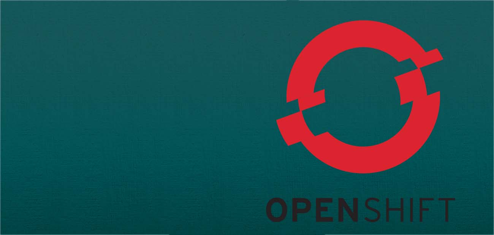

Have worked with a Laravel PHP framework. Knows how to route, create models, and views as part of the Model View Controller format.

Experienced with creating and managing virtual machines. Created and worked within windows 7+ and server virtual machines.

Created and managed virtual machines using VMware. Much experience with the Linux Mint OS within VMware.

Have worked with about every major Office Application. Word, Excel, PowerPoint are my strong suits.

Much experience with video manipulation, creation, and effects using Sony Vegas Pro.
Experienced with image creation and manipulation within Photoshop. Knows difference/understands different file types and how to convert between them.
Created many applications/projects using the NetBeans interface. Can manage/navigate through multiple projects, as well as link resources where needed.
Have worked in GitHub for many group projects, as well as personal projects. Knowledge in branch creation and version control.

Used Source Tree in larger scaled projects to keep GitHub projects clean and efficient.

Have worked with this Platform as a Service many times. Often hosts site being deployed from a GitHub Repository. Also used Azure to create and manage Virtual Machines.

Has used OpenShift for many projects. Hosted many PHP applications, linked with PostGreSQL servers on OpenShift. Knows how to SSH into hosted projects and manage Databases within them.